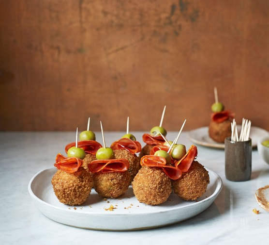
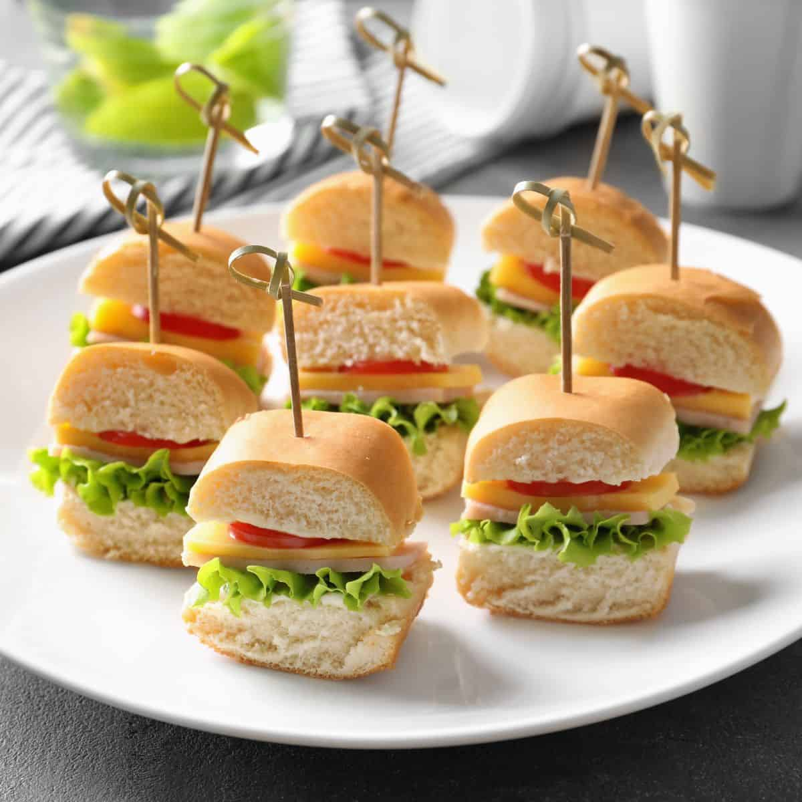
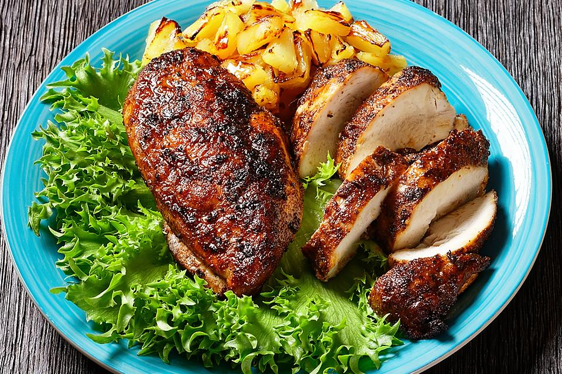

Una fresca ensalada con tomate, mozzarella y albahaca.
Bruschetta
Tostadas con mezcla de tomate y albahaca.

Croquetas de pollo
Crujientes por fuera y cremosas por dentro, estas croquetas están llenas de sabroso pollo y especias.

Mini Sandwhiches
Deliciosos bocadillos de tamaño perfecto, rellenos con una variedad de ingredientes frescos y sabrosos.
Platos Principales
Espaguetis a la Carbonara
Espaguetis con salsa cremosa de huevo y queso.
Pollo al Curry
Pollo cocinado en una rica salsa de curry.

Jerk Chicken
Pollo marinado en una mezcla vibrante de especias caribeñas, incluyendo pimientos, tomillo y jengibre, y asado a la perfección para obtener una piel crujiente y un sabor picante y ahumado.
Lasaña
Capas de pasta intercaladas con una rica salsa de carne o verduras, queso fundido y bechamel, cocidas al horno para obtener un plato gratinado, sabroso y reconfortante.
Postres
Tiramisu
Postre italiano con capas de café y queso mascarpone.
Brownies
Deliciosos brownies de chocolate.
Flan
El flan es un postre lácteo tradicional, típico de nuestra gastronomía.
4Leche
Un postre decadente y húmedo, elaborado con cuatro tipos de leche para una textura cremosa y un sabor dulce y rico.
.jpg)
.jpg)


.jpg)
.jpg)
.jpg)
.jpg)